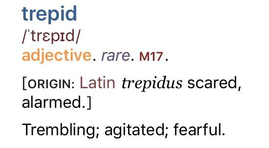
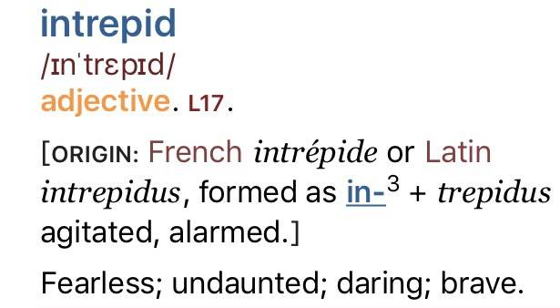
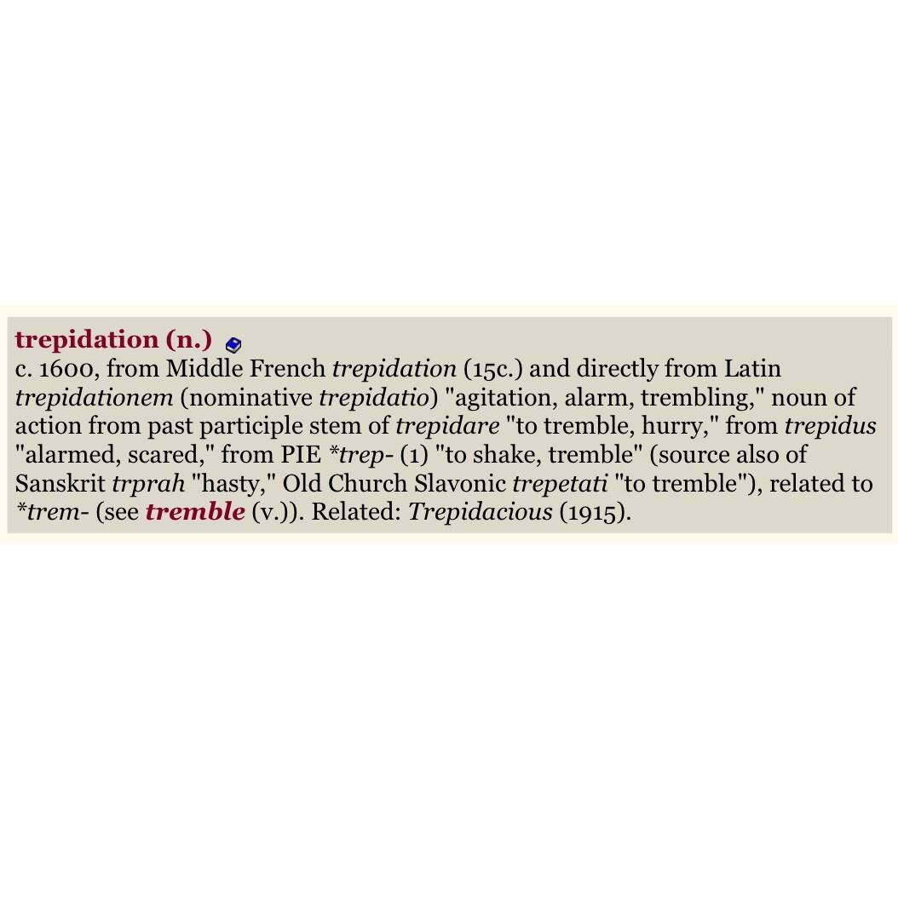
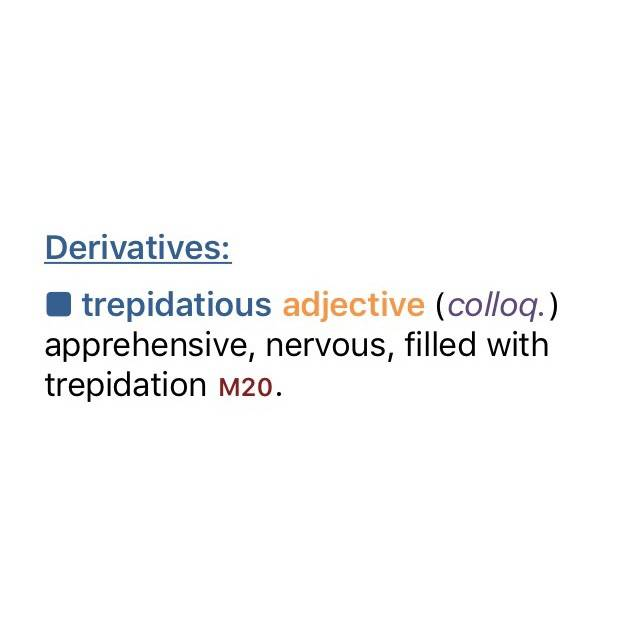
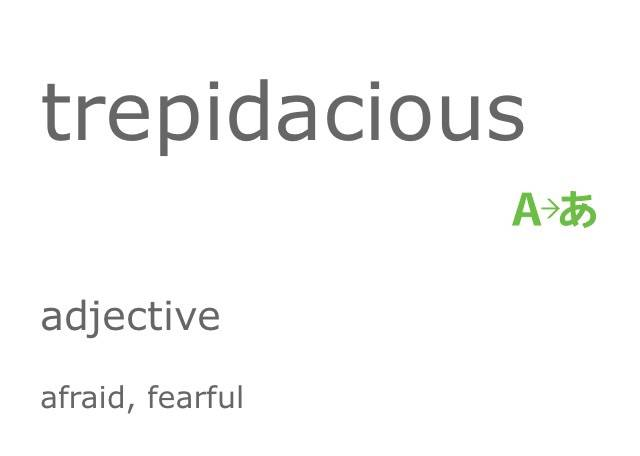

Trepidatious is apparently not a word*
I love language. Learned this the other day. Follow the steps… (* in the prescriptivist sense. It is obviously a word by usage.)
-

There's an old word "Trepid". OED calls it "rare" meaning nobody really uses it anymore. It is an adjective.
Fun fact: from Latin, related to "trep-" "to tremble".
-

Aside: From trepid we get the much more common word "Intrepid."
Not "rare" at all.
-

Trepid has a noun form "Trepidation" from the Latin Trepidare → Trepidationem.
-
In English we often make an adjective out of a noun by add by -ious.
Ambitious. Envious. Glorious. Studious. Vacatious. Just kidding about that last one but seriously it should be a word.
-

So from the noun trepidation we convert to the adjective form "Trepidatious." But trepid was already an adjective.
OED calls it "colloquial" which means "we here at oxford are judging you."
-
💫 THE MORE YOU KNOW 💫
-

Aside: dictionary.com spells it "Trepidacious" but Merriam-Webster, American Heritage and OED spell it with a T and the iPhone spell checker agrees. YMMV.